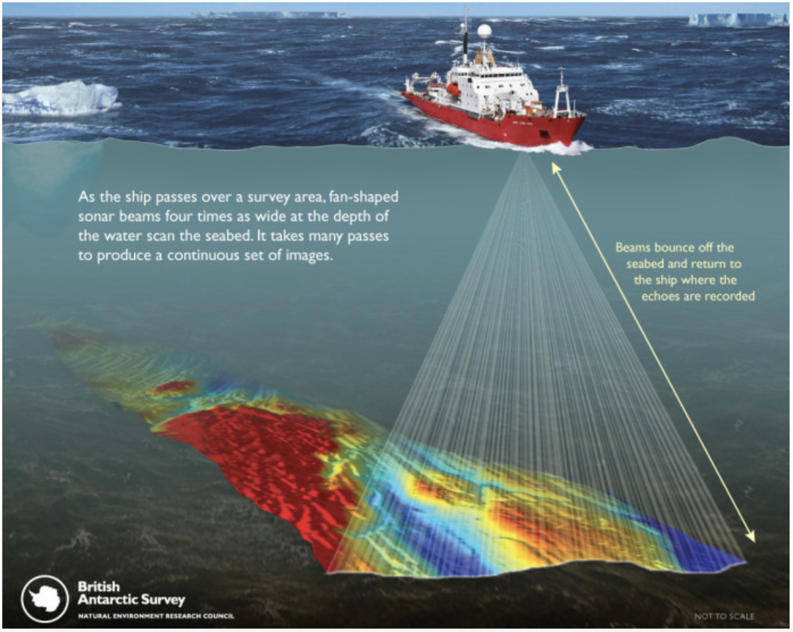
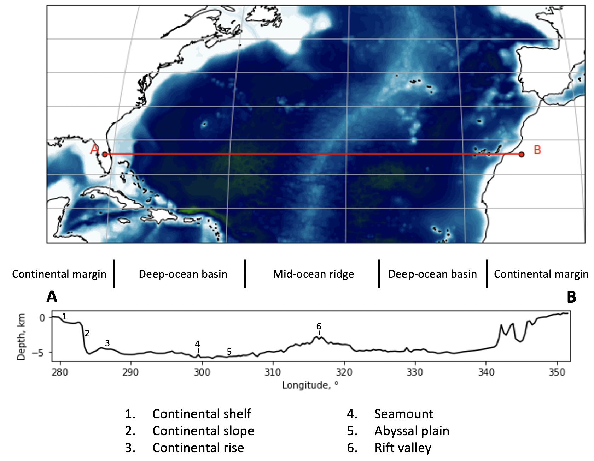
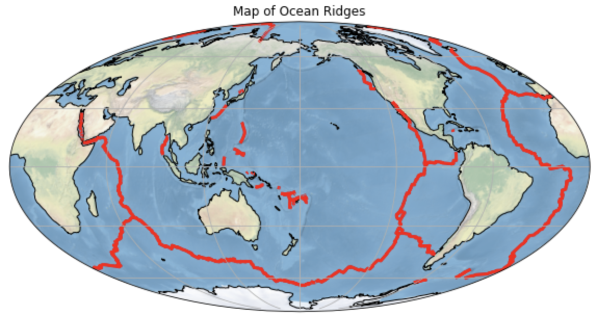
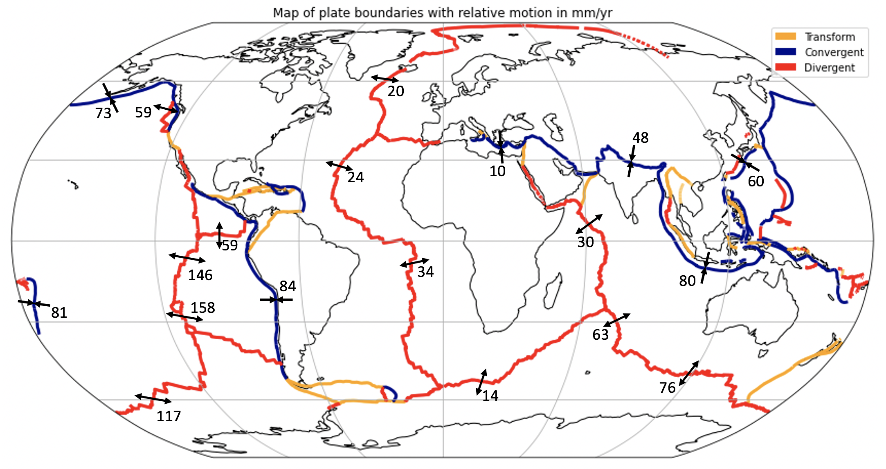
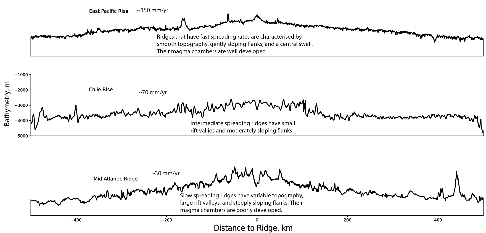
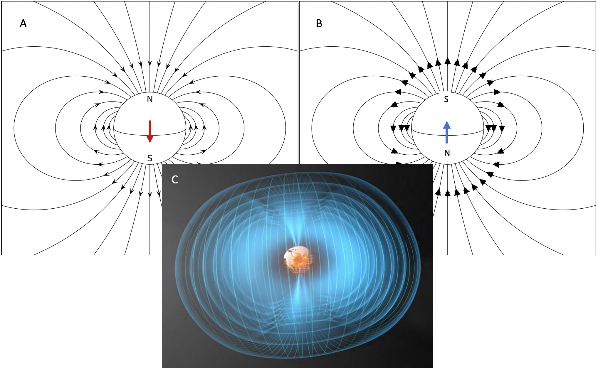
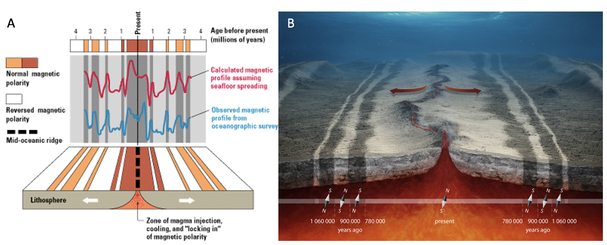
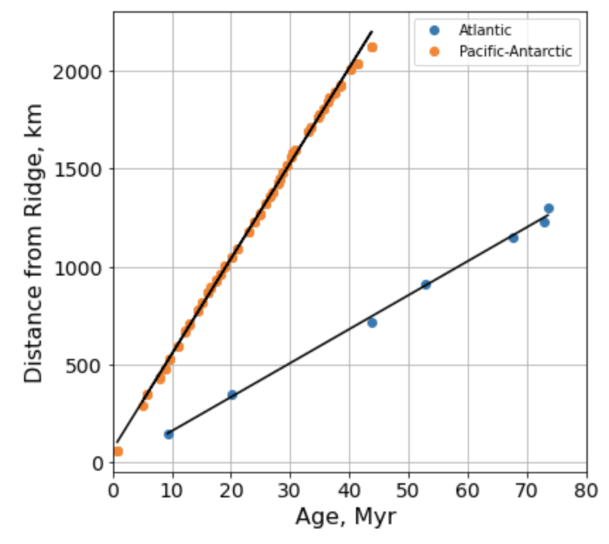

4.2 Seafloor Spreading¶
Goal: Build background knowledge about marine geophysical evidence for plate tectonics. More in-depth material on these topics can be studied in EPS C82 Oceans.
Outline:
Mapping the seafloor – Bathymetry
Anatomy of ocean ridges
Rates of seafloor spreading – Paleomagnetism
Mapping the Seafloor – Bathymetry¶
The topography of the ocean floor is called bathymetry. Modern measurements of ocean depth are made using sonar (Figure 1). Sound waves are transmitted from a ship (called a ping), they reflect off the seafloor and travel back to the ship, where a receiver records the echo. The travel-time (the time between the ping transmission and echo arrival) is precisely recorded, then using the sound speed of ocean water the depth to the seafloor can be determined. Research vessels equipped with multibeam sonar travel at about 10 miles per hour and research ship time is very expensive (~\$25,000/day), so only about 5% of the seafloor has been imaged in detail.

Figure 1: A research vessel measuring ocean depth using multibeam sonar. Source: British Antarctic Survey
The ocean floor has three main bathymetric areas: continental margins, ocean basins, and mid-ocean ridges (Figure 2). Continental margins are the transition from continental curst to oceanic crust. As we discussed before, oceanic crust has lower elevation than continental crust because it is denser and thinner, so sinks lower into the mantle. There are two kinds of continental margins: passive margins (such as the eastern coast of North America) made up of a shelf, slope, and rise, and active margins (such as the western coast of South America) where subduction occurs and a trench is created. Ocean basins, also called abyssal plains, make up most of the area of the seafloor and are fairly flat with a depth of ~5000 meters (where we saw the deeper hump of the hypsometric curve). The flat topography of abyssal plains is due to thick accumulations of sediments that have buried the rougher basaltic oceanic crust. The thickness of the sediments increases with age of the oceanic crust. Mid-ocean ridges are the expression of divergent plate boundaries. The oceanic ridge system is a ~70,000 km long mountain range that winds through all of Earth’s major oceans (Figure 3). New oceanic crust is created at the ridge. This new (and hotter) crust is more buoyant and sits higher than the surrounding abyssal plains at a depth of ~2500m. Sections of ridge are often offset by transform faults and some ridges have rift valleys along their axis, both of these features are observed in the seafloor bathymetry (Figure 2).

Figure 2: Bathymetry of the North Atlantic (i.e. passive margins).

Figure 3: Map of Earth’s mid-ocean ridge system.
Please watch these two ~6 min videos from IRIS:


Anatomy of Ocean Ridges¶
As two oceanic plates are pulled apart at divergent boundaries mantle material rises to fill the space and is partially melted by decompression. This magma erupts episodically at the ridge, creating new oceanic crust – like a conveyor belt. The relative plate motion differs between plate pairs; the north Mid-Atlantic Ridge is an example of a slow spreading ridge (~20 mm/yr), and the East Pacific Rise is an example of fast spreading (~150 mm/yr) (Figure 4).

Figure 4: Relative plate motion between the major lithospheric plates. The arrows indicate the relative plate velocities in mm/yr. (data source DeMets et al., 1990).
The topographic expression of seafloor spreading differs slightly based on the spreading rate of the plates (Figures 5). Fast spreading ridges have more well-developed magma chambers and more frequent eruptions. This leads to a gentler slope, central swell, and smoother topography. Slow spreading ridges have less frequent eruptions leading to a rift valley at the ridge axis and steeper, more rugged topography. Intermediate spreading ridges fall between these extremes.

Figure 5: Topography of ridge segments that exhibit fast, intermediate, and slow spreading rates.
Rates of seafloor spreading – Paleomagnetism¶
The rate of seafloor spreading is estimated using a paleomagnetic time-scale reference frame. As new oceanic crust is produced it records the conditions (direction and strength) of the Earth’s magnetic field at that time and location. To first order, Earth’s magnetic field is a dipole (i.e. there are two magnetic poles, a north and south) (Figure 6 A). Because of this dipolar field structure the strength of the magnetic field is a function of latitude. The strength varies from ~65,000 nT (nanotesla) near the poles to ~25,000 nT at the equator. The main Core Field is generated by motion of the liquid outer core by the geodynamo (Figure 6 C). Rocks in the crust acquire magnetization by various processes (e.g. when igneous rocks cool through the Curie temperature they acquire a thermal remanent magnetization). Magnetic anomalies (anomalous with respect to the background core dipole field) due to crustal sources are small, 20 – 1000 nT.
Please watch the first 15 minutes of this lecture by Prof. Bruce Buffett:


Figure 6: The Core Field is generated by convective motion of the liquid iron outer core which can exist in two (equal and opposite) polarity states. Modified from European Space Agency
Earth’s magnetic field varies with time. It reverses its polarity randomly. The field structure in both states is dipolar, but the pole locations are switched (Figure 6 A and B). The history of these polarity reversals has been reconstructed for the past ~200 million years and is called the geomagnetic polarity time scale (GPTS). This history of reversals is recorded by the oceanic crust as it forms at the ridge. This leads to ridge-parallel isochrons (surfaces of the same age) (Figure 7). Both sides of the ridge record this pattern of reversals leading to symmetry about the ridge (Figure 7). A research vessel towing a magnetometer measures the marine magnetic anomalies (Figure 7 A). These measurements can be correlated between ship tracks, matched with the GPTS, and this is used to determine the age of the seafloor. Once the seafloor age as a function of the distance from the ridge is determined the spreading rate can be computed (Figure 8).

Figure 7: The history of polarity reversals is recorded by the near-continuous eruptions of seafloor spreading. Ridge-parallel patterns of magnetization reflect the history of reversals of the geomagnetic field. These crustal marine magnetic anomalies can be measured by a ship-towed magnetometer (A). Ridge-parallel and symmetric “magnetic polarity stripes” reveal the spreading history of the ridge (B). Source: USGS and European Space Agency

Figure 8: Age of the seafloor (time) and distance from the ridge (distance) are used to compute the relative velocity of the spreading plates (velocity = distance / time).
Please watch this ~6 min video from IRIS: